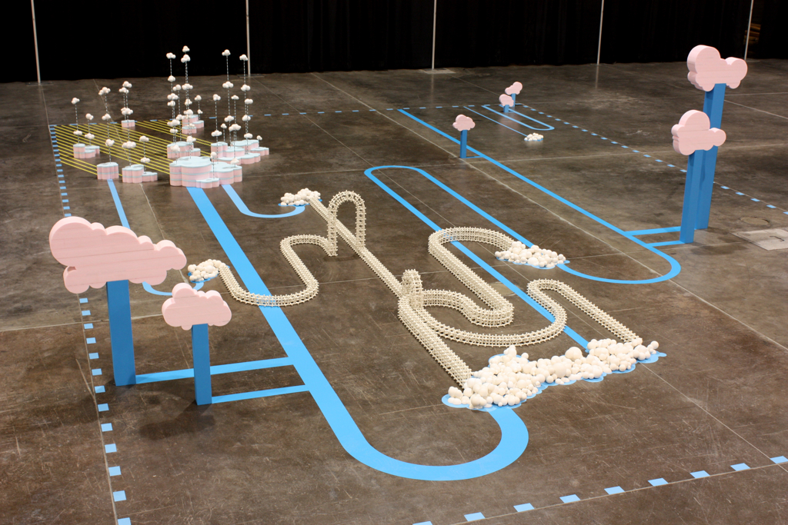

Version Control with GitHubOct 12th
 Photo credit: joepage1 / Foter / CC BY-ND
Version control. I can't remember how many times I would work on an excel or word document and constantly save multiple backups labeled xxx.v1, v2, v-final, final-final. Okay, maybe not the "final-final", but you never really know how far this can go. Add to this the complication of working and passing a document across multiple people, and god forbid two people decide to work on the same file simulatenously. Well, it looks like this problem has been solved by git - the ultimate (it just seems too ubiquitous to say otherwise, for now) version control system. Before I go into what git is, I'd like to elaborate on version control itself.
Whenever we work on something complex, be it a design in photoshop or a piece of code, we always run the risk of going down a path we deem later to be wrong. If you've ever built or designed anything where you aren't sure if the path you are going will be the best one until you've actually spent an hour navigating through a shroud of mystery, you'll want to have that safety net to backtrack your changes. I remember setting my brush history to some ridiculous (50+) strokes when working on some illustrations, and I can't tell you how many times this has come in handy. Now it may be because I'm only an amateur at this stuff, but it is still helpful to know that until you are completely satisfied, nothing is set in stone. Version control is just like that. It helps to store snapshots of the state of your work at different times during its development, from start to finish.
Git is version control done in a brilliant way. It won't store the entire project or file as another copy. Instead, when you make any change at all, it will store that change specifically. In other words, it has the ability to compartmentalize changes done to a file rather than stored an entirely new copy of the file itself. These changes or save-states are referred to as "commits".
What Git allows you to do locally, on your computer, GitHub allows for this version control system to be done over the internet. In fact, it provides value as a central location where many developers can connect, fork, pull or push their code. Essentially, GitHub allows for a team of developers to see others' changes, obtain a working copy to work from, and suggest their own changes from all over the world. You don't even need to maintain an online connection to do work. GitHub allows you to store the latest snapshot locally, and, when you're ready, compare your suggested changes with the latest version of the project. If these changes are deemed worthy of meshing seamlessly, GitHub will happily apply your recent changes to modify the code - the source of which everyone will compare against.